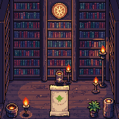
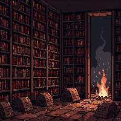

Multiverse Mages
You never cast a spell.
You decide which spells exist.
The host universe’s ruleset governs all magic cast inside it — for both attacker and defender.
Permit fire and your wardens throw it. So does every raider who walks through your portal already knowing how. Forbid it and it is inert in your sky — for them and for you.
Nineteen switches: five techniques, fourteen forms. A body of magic exists where a permitted technique crosses a permitted form. Toggle one and watch both skies.
Nothing is permitted. Your scholars have nothing to learn and your enemies have nothing to bring.
Click any technique or form to permit it. Both skies change together — that is the whole game.
Knowledge is physical, and it can be destroyed
A spell is not a node on a tech tree. It is a set of copies, and each one sits somewhere — in a scholar’s memory, in a book on a shelf, in a university library, or in a memory palace that cannot be stolen and cannot be written down.
Kill the last mage who knew it and burn the book, and it is gone. Not disabled, not greyed out. Gone from your universe, until somebody derives it again from first principles at several times the cost of having been taught it.


shelf · 63 volumes · eleven scholars can teach the deepest working
Your mages are academics, and they do not take orders
They have careers, curiosity, and lifespans. A human works for eighty years and dies mid-sentence. An elf spends two centuries being described as promising. They choose what to research, who to teach, and whether your library is still worth staying at.
You bless, you fund, you forbid, and you hand a founding scholar the seed of a body of magic nobody in your world has ever held. Then you let go — including during a raid, where you are a spectator with a budget.
A universe of pure archmages does not function. Somebody has to copy the books, raise the buildings, and hold the line with no magic at all.
Where it actually is
Pre-alpha, not playable. The simulation runs, raids resolve and burn real libraries, and the whole repository is public — including the measurements that say what is still wrong with it.
The table below is generated from the repository’s git tags and its OpenSpec task lists. Shipped means a release tag exists. Built means the work is finished and unreleased, which is a different thing and gets a different word.
| Version | Change | State |
|---|---|---|
| 0.1.0 | sim-core-foundationThe deterministic substrate — fixed-point arithmetic, a splittable PRNG, the entity store, replay. |
shippedreleased as v0.1.0 |
| 0.2.0 | core-contractsThe contracts everything downstream is built against: state schema, content schemas, primitive semantics. |
shippedreleased as v0.2.0 |
| 0.3.0 | knowledge-modelThe seventy-cell grid, knowledge instances with decay and loss, and the three traditions. |
shippedreleased as v0.3.0 |
| 0.4.0 | mages-and-speciesMages with careers and lifespans, six species, universities, and an economy underneath them. |
building102/107 tasks |
| 0.5.0 | agent-interfaceOne observation and action API serving scripted bots, Monte Carlo, and later reinforcement learning. |
built91/91 tasks — built, not yet released |
| 0.7.0 | god-agencyFavor, worship, interventions, and the terminal condition — ascension and what carries forward. |
building59/75 tasks |
| 0.9.0 | raid-engagementPortals, host-ruleset arbitration, a positional battlefield, and permanent consequences. |
building67/92 tasks |
| 0.11.0 | gym-bridgeThe reinforcement-learning bridge. It ships before the client, deliberately. |
built76/76 tasks — built, not yet released |
| — | metis-knowledgeKnowledge that cannot be written down at all. Held at proposal depth until the harness can price it. |
proposed1/51 tasks — proposal depth |
Generated from git tag and openspec/changes/*/tasks.md at 59d7a2d. Nothing on this table is typed by hand.
The design describes more than the build contains, and that gap is stated rather than hidden. The most recent honest result: a bot that flipped two permission switches and then submitted nothing for the remaining 2,260 ticks beat the bot that funded universities and blessed scholars, forty games to nil. Those verbs were worth slightly less than nothing — and the harness found it long before a human playtester would have.
Somewhere else, another god is deciding what fire means.
AGPL-3.0-or-later · assets CC BY-SA 4.0 · built in the open